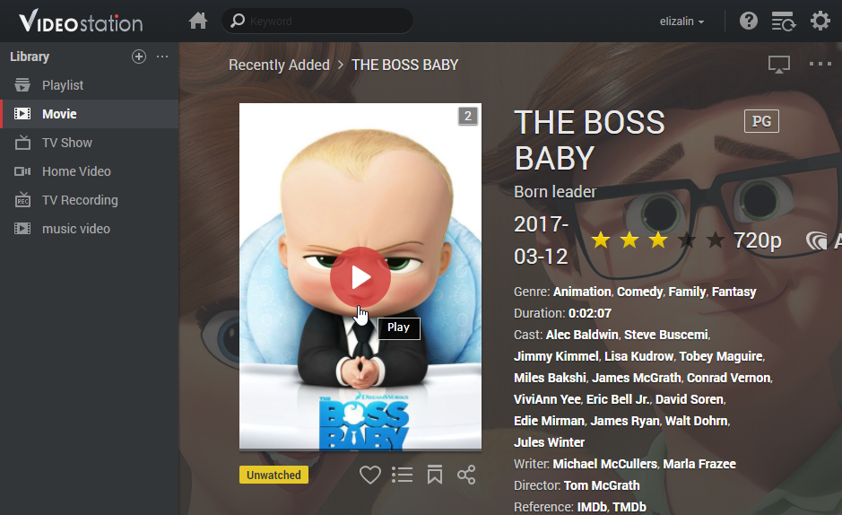

Panoramica
Con Video Station, è possibile organizzare e classificare facilmente le raccolte video in differenti cataloghi, predefiniti o personalizzati, per trovare il video desiderato più velocemente. Inoltre, verrà semplificata e ottimizzata anche la riproduzione e condivisione dei video: basteranno pochi clic.
1. Installazione di Video Station
Per installare Video Station, andare su Package Center, trovare Video Station, quindi fare clic su Installa.

2. Archiviazione e classificazione di video in raccolte predefinite
Video Station fornisce tre raccolte predefinite, come mostrato nel pannello di sinistra: Film, Evento TV e Home Video. Per verificare che i video siano indicizzati e classificati correttamente, è necessario aggiungere cartelle video per ciascuna libreria e archiviare prima i file nelle cartelle video corrispondenti. Per impostazione predefinita, sono state create tre cartelle video nella cartella video condivisa per le tre raccolte predefinite: Film, Evento TV e Home Video. Tuttavia, oltre a queste tre cartelle, è anche possibile aggiungere più cartelle video per i cataloghi, come segue.
Il sistema ricercherà automaticamente i metadati correlati e altre informazioni (es. immagine copertina) per due tipi di video (film e serie tv) da Internet. In questo modo, per garantire che i video siano associati alle informazioni corrette, è consigliabile che i video corrispondano al tipo di video specificato dei rispettivi cataloghi.
Aggiungere cartelle video per i cataloghi predefiniti
- Andare su Impostazioni > Libreria.
- Fare clic sull'icona Aggiungi cartella per scegliere una cartella in Synology NAS, quindi selezionare la libreria di destinazione. È possibile aggiungere fino a 100 cartelle video per libreria, ma dopo avere selezionato una cartella, non sarà più possibile selezione la cartella o le rispettive sottocartelle da un'altra libreria.
- Archiviare i file video su cartelle video per classificare i video nei cataloghi corrispondenti.
- A questo punto, sarà possibile ricercare e guardare i video desiderati attraverso i cataloghi.


3. Archiviazione e classificazione di video in raccolte personalizzate
Oltre alle tre librerie predefinite a cui è possibile accedere per impostazione predefinita, come admin DSM o come utenti appartenenti al gruppo administrators, è possibile creare librerie personalizzate e assegnare diritti di accesso ad alcuni utenti.
Creare librerie personalizzate
- Andare su Impostazioni > Libreria e fare clic sull'icona più per creare la libreria.
- Specificare un nome per la nuova libreria, selezionare il tipo di video da inserire nella cartella, quindi scegliere Pubblico per consentire a chiunque di accedere alla libreria oppure scegliere Privato per limitare l'accesso a specifici utenti con autorizzazioni. I video collocati nella cartella devono corrispondere al tipo selezionato qui per garantire la precisione video delle informazioni raccolte da Internet.
- Se si sceglie Privato, fare clic su Assegna autorizzazioni, quindi spuntare le caselle di controllo per garantire l'accesso agli utenti.

4. Riprodurre video
Dopo avere classificato i file video in librerie differenti, sarà possibile seguire i passaggi seguenti per riprodurre i video su Video Station. Si consiglia di installare il lettore multimediale VLC (Windows, Linux) prima nel computer. Oltre alla riproduzione di video sul computer locale, è anche possibile trasmettere i video su dispositivi DMA conformi con DLNA/UPnP o su dispositivi compatibili con AirPlay per la riproduzione dei video.
Riprodurre i video con il lettore video integrato
- Selezionare una clip video da riprodurre, quindi fare clic sull'icona di riproduzione nell'immagine video. 
- Il video dovrebbe avviare la riproduzione immediatamente. Se non è possibile, verificare che il formato del video sia supportato dal browser Web oppure di avere installato il plugin VLC nel computer.
- Usare i pulsanti su schermo e la barra di avanzamento alla base del lettore multimediale, a seconda delle necessità. È anche possibile regolare il volume, selezionare la qualità di riproduzione video e la traccia audio, attivare i sottotitoli oppure trasmettere il video su un altro dispositivo (se applicabile).

Per informazioni dettagliate sul plugin VLC e i dispositivi supportati, consultare la Guida DSM > Video Station > Riproduzione video.
5. Condivisione video con il pubblico
Con la funzione di condivisione pubblica, è possibile condividere facilmente i video con altre persone utilizzando Video Station e tutti i video condivisi saranno accessibili pubblicamente da chiunque disponga del link.
Condivisione di video con altri
- Passare a una libreria video e fare clic su Tutti, nell'angolo in alto a sinistra, per visualizzare tutti i video in questa libreria.
- Fare clic sull'icona Modalità selezione oppure tenere premuto Ctrl o Shift per selezionare più video. Quindi fare clic sull'icona Condivisione pubblica.
- Se si è selezionato un solo video da condividere, il video sarà aggiunto a una raccolta condivisa chiamata Video condivisi. Quindi, è possibile gestire tutti i video condivisi uno per uno.
- Se si sono selezionati più video da condividere, i video saranno raggruppati in una nuova raccolta condivisa.
- Se necessario, specificare un periodo di validità.
- È anche possibile fare clic sull'icona altro nell'immagine del film target e fare clic su Condivisione pubblica per aggiungere il video selezionato su Video condivisi.
- Copiare e incollare semplicemente il link nelle e-mail, messaggi istantanei e pagine Web per condividere i video con tutti.


6. Organizzazione e visione di video su dispositivi mobile
Per connettersi a Video Station tramite i dispositivi mobile, è possibile scaricare DS video con i dispositivi iOS/Android con i seguenti codici QR per riprodurre video e organizzare le raccolte nei dispositivi mobile oppure per trasmettere i video su dispositivi DMA o AirPlay sia da casa che in giro.